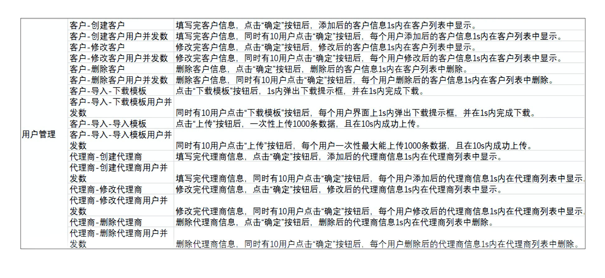
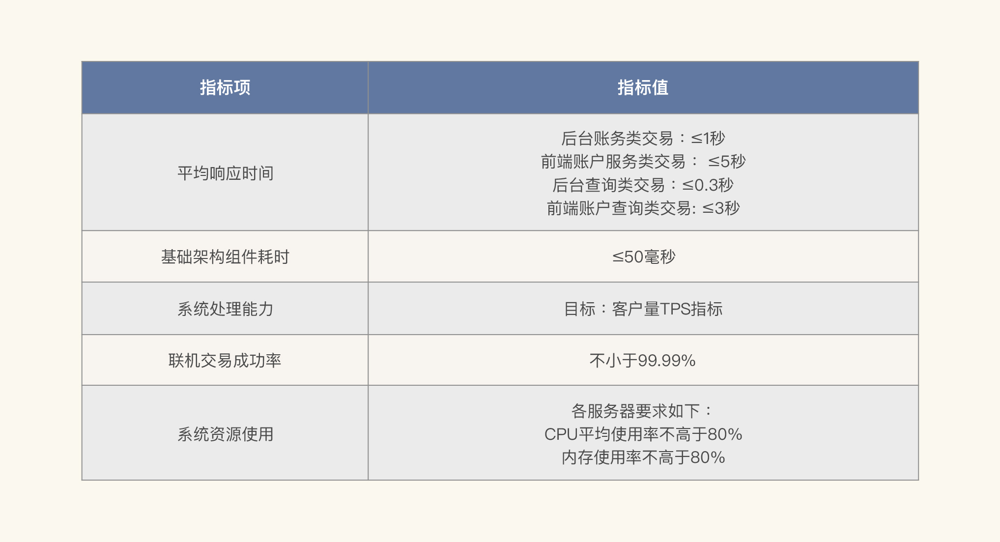
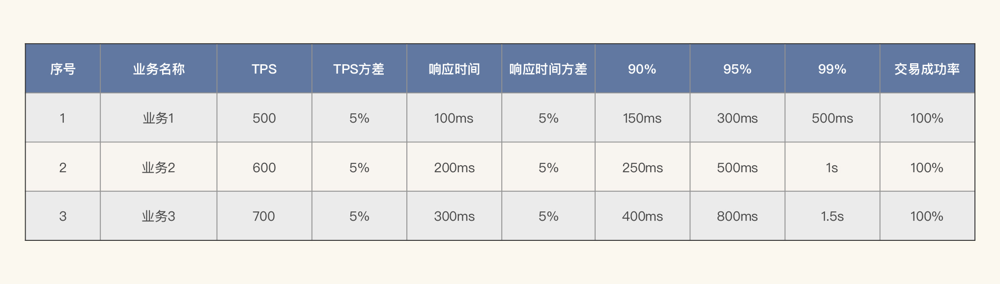
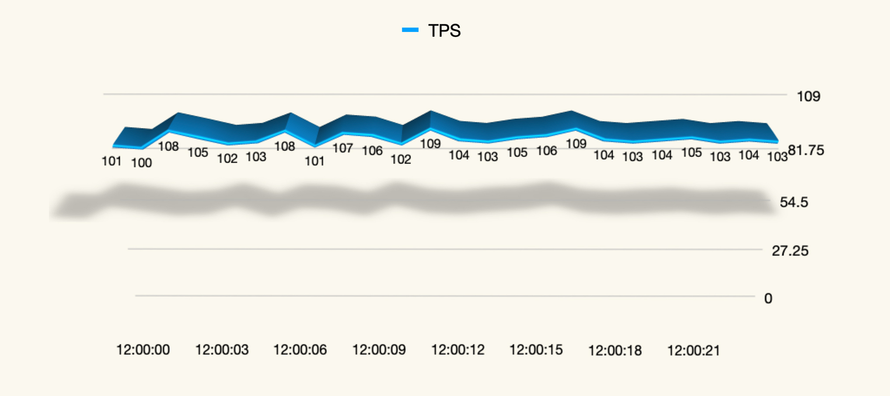
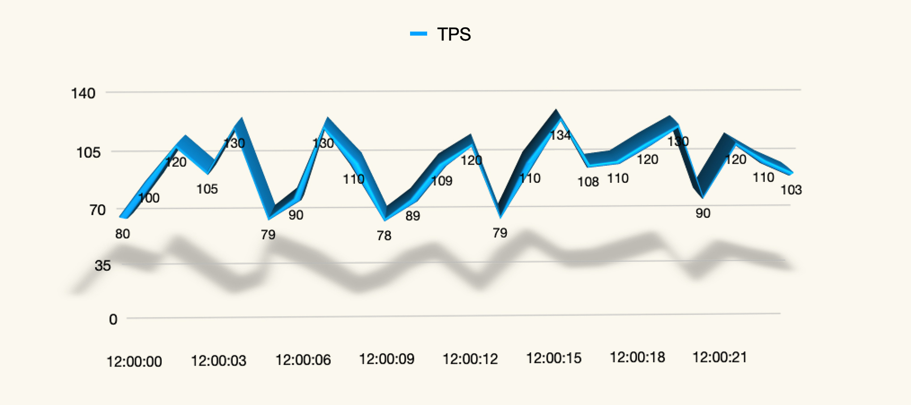
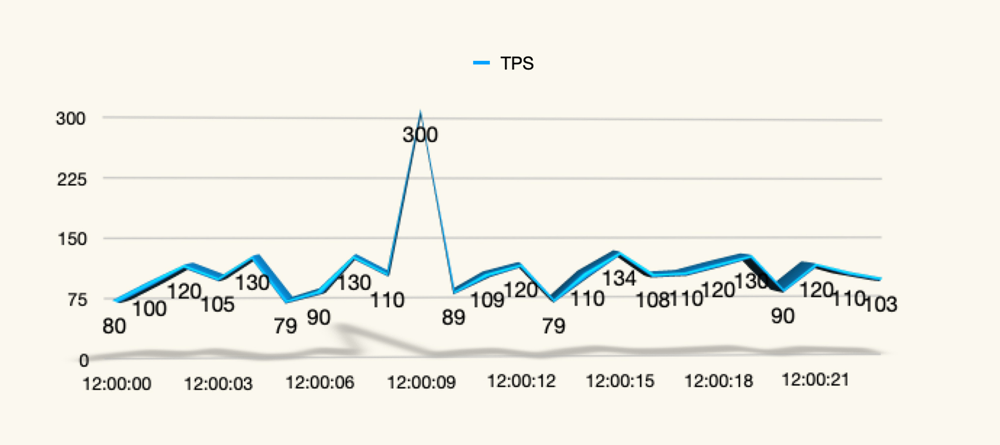
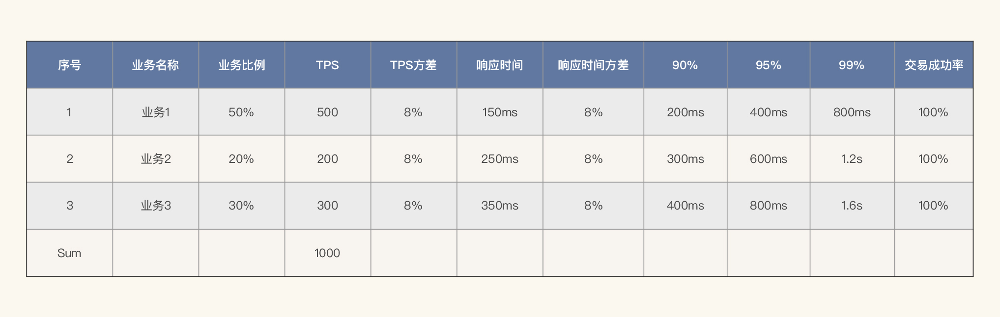
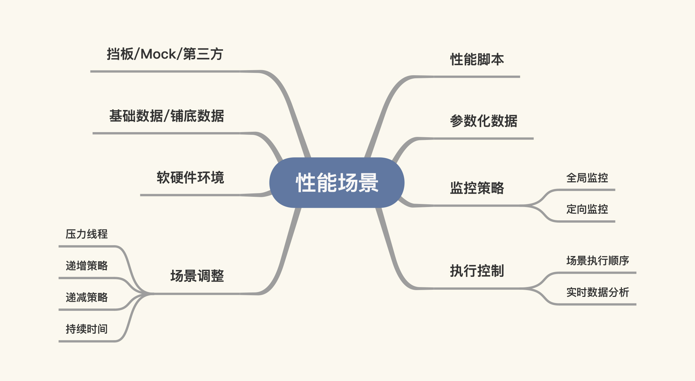

- 00 开篇词 打破四大认知局限，进阶高级性能工程师.md.html
- 01 性能工程：为什么很多性能测试人员无法对性能结果负责？.md.html
- 02 关键概念：性能指标和场景的确定.md.html
- 03 核心分析逻辑：所有的性能分析，靠这七步都能搞定.md.html
- 04 如何构建性能分析决策树和查找瓶颈证据链？.md.html
- 05 性能方案：你的方案是否还停留在形式上？.md.html
- 06 如何抽取出符合真实业务场景的业务模型？.md.html
- 07 性能场景的数据到底应该做成什么样子？.md.html
- 08 并发、在线和TPS到底是什么关系？.md.html
- 09 如何设计全局和定向监控策略？.md.html
- 10 设计基准场景需要注意哪些关键点？.md.html
- 11 打开首页之一：一个案例，带你搞懂基础硬件设施的性能问题.md.html
- 12 打开首页之二：如何平衡利用硬件资源？.md.html
- 13 用户登录：怎么判断线程中的Block原因？.md.html
- 14 用户信息查询：如何解决网络软中断瓶颈问题？.md.html
- 15 查询商品：资源不足有哪些性能表现？.md.html
- 16 商品加入购物车：SQL优化和压力工具中的参数分析.md.html
- 17 查询购物车：为什么铺底参数一定要符合真实业务特性？.md.html
- 18 购物车信息确定订单：为什么动态参数化逻辑非常重要？.md.html
- 19 生成订单信息之一：应用JDBC池优化和内存溢出分析.md.html
- 20 生成订单信息之二：业务逻辑复杂，怎么做性能优化？.md.html
- 21 支付前查询订单列表：如何分析优化一个固定的技术组件？.md.html
- 22 支付订单信息：如何高效解决for循环产生的内存溢出？.md.html
- 23 决定容量场景成败的关键因素有哪些？.md.html
- 24 容量场景之一：索引优化和Kubernetes资源分配不均衡怎么办？.md.html
- 25 容量场景之二：缓存对性能会有什么样的影响？.md.html
- 26 稳定性场景之一：怎样搞定业务积累量产生的瓶颈问题？.md.html
- 27 稳定性场景之二：怎样搞定磁盘不足产生的瓶颈问题？.md.html
- 28 如何确定异常场景的范围和设计逻辑？.md.html
- 29 异常场景：如何模拟不同组件层级的异常？.md.html
- 30 如何确定生产系统配置？.md.html
- 31 怎么写出有价值的性能报告？.md.html
- 我们这个课程的系统是怎么搭建起来的？.md.html
- 结束语 做真正的性能项目.md.html
- 捐赠
02 关键概念：性能指标和场景的确定
你好，我是高楼。
上节课我们把性能从“测试”引到了“工程”级别。接下来，我们要理一理工程级别中几个重要的概念，包括：
- 性能需求指标；
- 性能场景；
- 性能分析决策树；
- 查找性能瓶颈证据链。
这些概念贯穿整个性能工程，有了它们，我们就不会在性能项目中迷失方向。为什么这么说呢？接下来的课程里，我会给你一一分析。
为了能让你更好地消化这些内容，我们把这几个概念分成三节课来详细讲解。今天这节课我们先来看“性能需求指标”和“性能场景”。
性能需求指标
说到性能需求，真是我从业十几年来性能职场辛酸的起点。因为我几乎没有见过精准明确的需求，很多时候性能需求都变成了一句空话。如果你对此感触不深，我们不妨来看两个反面教材。
反面教材1：

像这样的性能需求，基本上就是业务方的一种直观感觉，想看看单用户的操作响应，所以算不上是什么专业的性能测试需求。
不过你需要注意一点，这样的需求背后很容易埋着一个坑：列这个表的人可能想让系统在任何压力场景下都能达到这样的性能指标。那你就应该知道，明确性能需求是一个关键点，我们要明确在什么样的业务压力场景下要求这样的指标。在大压力的场景下，表格中所列的时间需求估计就实现不了了。因此，上面这张表格里的性能需求属于不合格的需求。
反面教材2：
我们再来看看下面这个性能需求指标。

这个需求看起来非常清晰，但仍然有一个问题，那就是不够细化。为什么这么说呢？
我给你举个例子，这里面有一个指标值是“前端账户服务类交易：≤5秒”，我们知道账户交易有不少功能，如果这里要求的是每个交易都不大于5秒的话，那就过于宽泛了。其他的需求也有类似的问题。
而且，表格里有一个指标是说“CPU平均使用率不高于80%”，这个技术需求看似很具体，可是我想问你，是什么样的CPU使用率？如果是us cpu的话，那是不是使用率不高于80%就可以保证系统是好的呢？还有没有其他的制约条件呢？要不要再看看CPU队列呢？
我给你这么一讲，你有没有觉得上面这些需求指标都没法用了？其实，在实际的工作场景中还有很多反面教材。
那什么样的性能需求才是合理的呢？这就需要我们从四种不同的性能场景入手，区别对待。
基准场景的性能需求指标
我们先说下业务需求指标。我们可以列这样一个单业务性能指标的表格。

（这是一个明显为基准测试场景列的指标，我在这里只是简单列了几个重要的参数，其他参数你可以自行组装。）
当然了，你要是喜欢的话，也可以把参数“标准方差”改为“响应时间的百分比”，比如90%、95%、99%这样的值。如果我们在刚才的表格里加上这类限制，就会变成下面这样：

（注：这里的数据，我只是做一个示意展示，并不是说一定要满足这样的关系。）
对此，你知道为什么我们要定标准方差或者是响应时间百分比吗？因为对于性能来说，当平均值是一个比较优秀的值时，有可能会出现非常抖动的情况。要知道，“标准方差”和“响应时间百分比”的作用并不一样。前者是为了描述一条曲线的上下浮动范围有多大，而后者是为了查看曲线的上限在哪里。
平时我常看的是标准方差，因为对于性能来说，系统受到一些瞬间毛刺的影响时，会出现一些比较高的值。当然了，这也并不能说明系统不够稳定，我们需要分析原因才能知道为什么会有毛刺。下面我们通过几张图来感受一下标准方差对曲线影响的重要程度。
当标准方差比较小的时候（标准方差约为2.5），示意图如下：

当标准方差较大时（标准方差约为17.6），示意图如下：

如果出现毛刺，示意图如下：

（注：不知道你有没有发现，上面这张示意图其实是有问题的。因为显然上图是在固定的压力线程之下的，而中间有一个很高的毛刺，这就有问题了，如果全都是正确的事务，不应该出现这么高的毛刺。所以这种毛刺通常都是在压力过程中由事务错误导致的。 ）
基准场景就是用这样的方式来限定业务需求指标的，那在容量场景中怎么办？我们需要添加什么参数来限定呢？
容量场景的性能需求指标
对于容量场景来说，最重要的就是业务比例，也就是我们经常说的业务模型。同时，对于其他重要的性能参数也可以重新制定。示意如下：

（注：这里的数据，我只是做个示意展示，并不是说一定要满足这样的关系。）
你可以看到，在这个容量场景中我们确定了业务比例，也确定了总体TPS的需求指标，再通过百分比我们就可以计算出每个业务的TPS目标。此外，我还对响应时间做了限制。
从性能角度来看，这几个参数限制就足以定死一个场景了。从技术角度来说，这样的容量需求也是可测的。当然，容量场景也会有多个，这要取决于业务特性。
稳定性场景的性能需求指标
关于这个场景的指标，我在后面的课程中会给你详细讲解。这里我主要强调两点：
- 稳定性的时间长度要合理，也就是说要合理判断稳定性场景需要运行多长时间；
- 稳定性使用的TPS量级要合理，也就是说我们要合理判断稳定性场景应该用多大的压力执行。
上述是稳定性场景中非常重要的两个指标。
异常场景的性能需求指标
针对该场景，你只需记住这个流程即可：针对系统的架构，先分析异常场景中的需求点，再设计相应的案例来覆盖。为什么要分析系统架构呢？因为在一个应用中，我们把功能测试完一遍之后，异常问题通常有两大类：其一是架构级的异常；其二是容量引起的性能异常。而对于架构级的异常，我们只能站在架构的角度进行分析。
描述完这些性能需求指标，我们是不是就可以往下走了呢？从性能技术的角度来说，的确可以往下走了。但是你别忘了，我们还没有描述用户级的指标。怎么办？这里就涉及到并发度的计算了。因为如果没有并发度的计算，我们就无法回答TPS和用户之间的关系。关于这一点，我会在后面的实践部分中给你做操作级的详细解释。
性能场景
通常情况下，有了性能需求指标之后，我们需要把这些性能需求指标一一对应到场景中，看它们符合哪个类型。
可能有人看到这里会说：“我觉得全都有了呀。其实不是！在我的性能工程理念中，场景绝对不只有脚本和业务模型这么点内容。我在上一个专栏中已经描述了场景设计和执行，有两个重点：
- 场景分为四类（基准、容量、稳定性、异常）；
- 执行过程中要保持连续递增。
在我们这个课程中，我要从工程级的角度把场景做更大的扩充。
你可能会想，场景是有多重要，至于吗？你可以把场景理解为是性能方案的落地，也是性能实施的核心，更是性能分析的起点……我大概能写出10个这样的句子来，来说明“场景”的重要性。
下面这张图是性能场景所包含的内容。

相信你可以感受到，在我的性能工程理念中，场景是一个复杂而宏大的概念。因为在我的工作中，只要场景跑起来，图中这些都是我要观察的内容。为什么？下面我就分别给你讲一讲，希望你能明白它们的重要性。
性能脚本：性能脚本只是场景中用来施压的部分，它记录了这个场景要做的是哪些事情，是接口级脚本、业务级脚本，还是用户级脚本？
参数化数据：这一点我在平时的培训中反复强调过多次，但是，仍然有很多人认为用少量的参数循环跑场景是合理的。这样的想法绝对是错的！因为如果严重的话，会直接导致结果不可用。
监控策略：请注意，在一开始的场景执行中，不要过度上监控工具，最好是先上全局监控工具。等有了问题之后，我们再重复执行场景，上定向监控工具。
执行控制：首先，我们得按“基准-容量-稳定性-异常”的逻辑执行；其次，在执行过程中要查看实时的数据曲线，并判断是停下来，还是继续，以及要分析哪些内容，以便我们清楚下一步要干什么事情。
场景调整：在这一步中我们需要明确很多东西，比如压力线程到底应该从多少开始，最大是多少；递增策略到底配置成什么样；要不要递减策略；持续时间是多长等等。
软硬件环境：在场景执行时我们脑子里要有概念，就是在这样的场景设计之下，软硬件的表现应该是什么样子，CPU、IO、内存、网络应该用多少，线程池是否合理等等，这些都要有经验上的判断和比对。
基础数据/铺底数据：不同的场景目标，对基础数据/铺底数据的要求是不一样的。而我们在性能场景中要求的基础数据/铺底数据就是和生产一致。
挡板/Mock/第三方：在场景中，对不可控的第三方一定要管控好，因为第三方的快慢会直接影响结果。这一步我们要根据场景的目标来。如果要测试的是真实生产逻辑，那就应该加上这一步；如果要测试的是，自己的系统有没有性能问题，那就可以屏蔽掉。但是在结果报告中，我们需要写明这个风险。
在我的性能理念中，上述这些都是必须存在的概念，场景有了这些内容后才像一个样子。在后面的课程里，我也将为你详细描述如何把它们应用到具体的项目中。
有了完美的场景之后，并不代表我们就可以得到完美的答案。因为还有更重要的事情在等着你，那就是做性能的分析。性能分析的逻辑要比场景设计复杂得多，大体来说主要有两个重点：
- 性能分析决策树；
- 性能瓶颈证据链。
我在前半生的职业生涯中，主要就是靠这两个思路支撑着我的工作，同时我也用这样的思路碾压过不少“马保国”们。在接下来的课程中，我会给你仔细讲解其中的精髓所在。
另外，还有两个关键点就是：构建性能分析决策树和判断性能瓶颈证据链，这些我也会在后面的课程中给你讲清楚。
总结
好，现在我们来总结一下这节课的内容。
从“性能测试”到“性能工程”的思路转换，并不是一句话，也不是画个图，写个文章，做个topic，就可以尽述的。我们只有在工作中将上面说的每一步应用到具体的工作中去，才是真正的工程。这也是我为你梳理性能概念的初衷。
我们再一起回顾下这节课的重点内容。
性能需求指标：没有业务指标就没有技术指标，而我们的工作就是让业务指标（比如并发用户数、在线用户数等）和技术指标（比如CPU、IO等）对应起来。在不同的性能场景中要定义好不同的性能需求指标，有些是自己看的，有些是给别人看的。
性能场景：其实性能场景真的不用有更多的分类了。我们讲的这四类场景（基准、容量、稳定性、异常）足够覆盖所有的性能执行过程。
课后作业
学完这节课后，请你再认真思考两个问题：
- 性能场景为什么只分为四类就够了？
- 你常见的性能需求指标都细化到了什么程度？
欢迎你在留言区写下你的思考和答案，和我交流讨论。如果你觉得这节课有收获，也欢迎把它分享给你身边的朋友，他们的一些想法或许会让你有更大的收获。我们下节课见！
关于课程读者群
点击课程详情页的链接，扫描二维码，就可以加入我们这个课程的读者群哦，希望这里的交流与思维碰撞能帮助你取得更大的进步，期待你的到来～
© 2019 - 2023 Liangliang Lee. Powered by gin and hexo-theme-book.